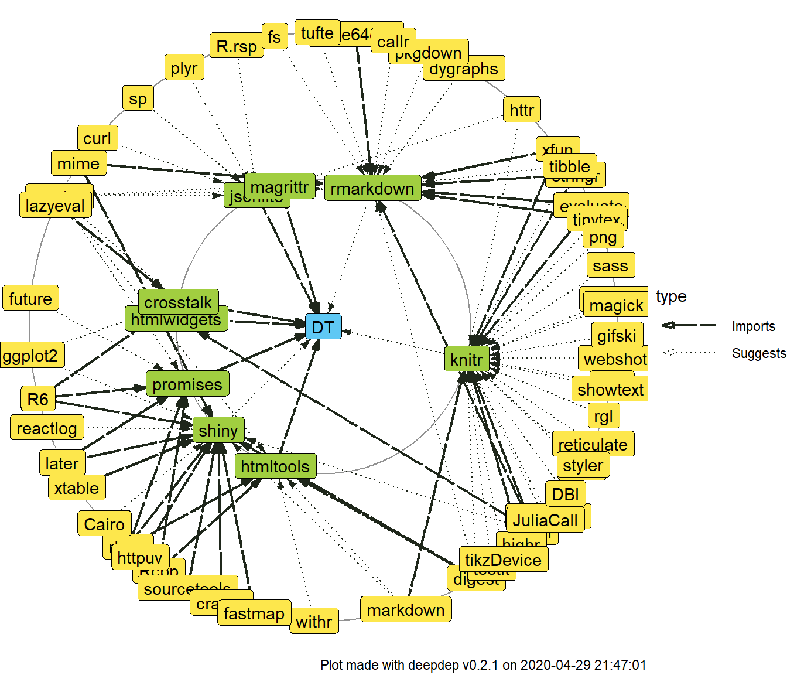
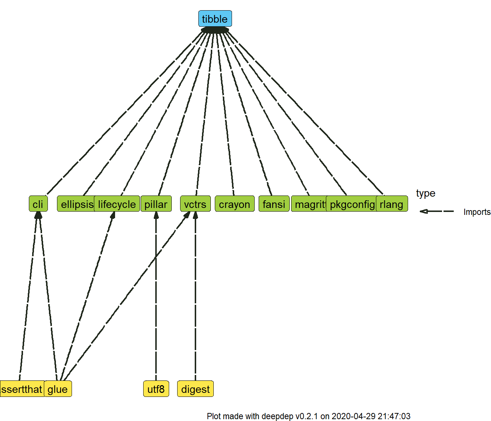
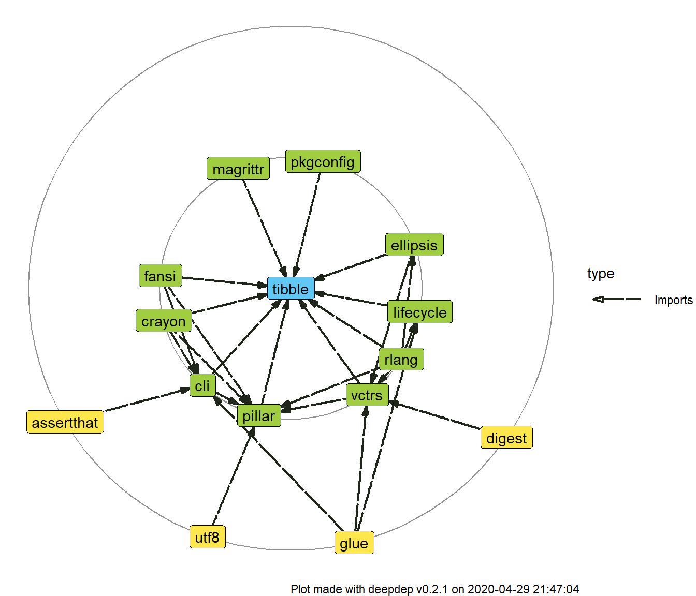
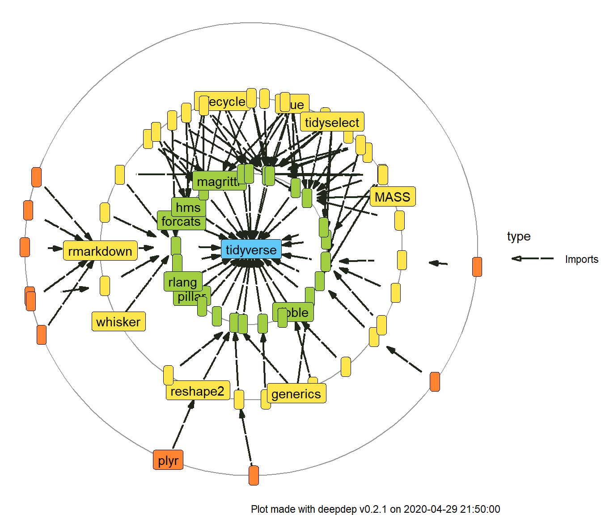

Introduction
Package deepdep was created to acquire and visualize information on dependencies of R packages in a smart and convenient way. Most of its functionality is contained in two functions: deepdep – to get a data.frame with dependencies described and plot_dependencies – visualize this data.frame.
Use case
Suppose you’re creating an R package and you want to include graph of its dependencies to your vignette, README.md file on your git repository or article on your package. With deepdep you simply need to type one line:
But before we describe how this function works in detail, let’s see what are other functionalities of the package.
Features
deepdep package exports the following functions:
-
get_available_packages, -
get_description, -
get_dependencies, -
get_downloads, -
deepdep, -
plot_dependencies.
Those functions rely on each other and are ordered from the least to the most top-leveled. We’ll describe what they exactly do and how on examples.
get_available_packages
This function lists, as the name indicates, available packages. The default behaviour is listing all CRAN packages.
t <- get_available_packages()
head(t, 100)
#> A3 aaSEA ABACUS
#> "A3" "aaSEA" "ABACUS"
#> abbyyR abc abc.data
#> "abbyyR" "abc" "abc.data"
#> ABC.RAP abcADM ABCanalysis
#> "ABC.RAP" "abcADM" "ABCanalysis"
#> abcdeFBA ABCoptim ABCp2
#> "abcdeFBA" "ABCoptim" "ABCp2"
#> abcrf abctools abd
#> "abcrf" "abctools" "abd"
#> abe abf2 ABHgenotypeR
#> "abe" "abf2" "ABHgenotypeR"
#> abind abjutils abn
#> "abind" "abjutils" "abn"
#> abnormality abodOutlier ABPS
#> "abnormality" "abodOutlier" "ABPS"
#> AbsFilterGSEA AbSim abstractr
#> "AbsFilterGSEA" "AbSim" "abstractr"
#> abtest abundant Ac3net
#> "abtest" "abundant" "Ac3net"
#> ACA acc accelerometry
#> "ACA" "acc" "accelerometry"
#> accelmissing accept AcceptanceSampling
#> "accelmissing" "accept" "AcceptanceSampling"
#> ACCLMA accrual accrued
#> "ACCLMA" "accrual" "accrued"
#> accSDA ACD ACDm
#> "accSDA" "ACD" "ACDm"
#> ace2fastq acebayes acepack
#> "ace2fastq" "acebayes" "acepack"
#> ACEt acfMPeriod acid
#> "ACEt" "acfMPeriod" "acid"
#> acm4r ACMEeqtl acmeR
#> "acm4r" "ACMEeqtl" "acmeR"
#> ACNE acnr acopula
#> "ACNE" "acnr" "acopula"
#> AcousticNDLCodeR acp aCRM
#> "AcousticNDLCodeR" "acp" "aCRM"
#> AcrossTic acrt acs
#> "AcrossTic" "acrt" "acs"
#> ACSNMineR acss acss.data
#> "ACSNMineR" "acss" "acss.data"
#> ACSWR ACTCD ActFrag
#> "ACSWR" "ACTCD" "ActFrag"
#> Actigraphy ActiveDriver ActiveDriverWGS
#> "Actigraphy" "ActiveDriver" "ActiveDriverWGS"
#> ActivePathways activity activityCounts
#> "ActivePathways" "activity" "activityCounts"
#> ActivityIndex activPAL activpalProcessing
#> "ActivityIndex" "activPAL" "activpalProcessing"
#> actogrammr actuar AcuityView
#> "actogrammr" "actuar" "AcuityView"
#> ada adabag adagio
#> "ada" "adabag" "adagio"
#> adamethods AdapEnetClass adapr
#> "adamethods" "AdapEnetClass" "adapr"
#> AdapSamp adaptalint AdaptFit
#> "AdapSamp" "adaptalint" "AdaptFit"
#> AdaptFitOS AdaptGauss adaptiveGPCA
#> "AdaptFitOS" "AdaptGauss" "adaptiveGPCA"
#> AdaptiveSparsity adaptivetau adaptMCMC
#> "AdaptiveSparsity" "adaptivetau" "adaptMCMC"
#> adaptMT ADAPTS adaptsmoFMRI
#> "adaptMT" "ADAPTS" "adaptsmoFMRI"
#> adaptTest AdaSampling ADCT
#> "adaptTest" "AdaSampling" "ADCT"
#> addhaz
#> "addhaz"However, if you want to check if package is present in a little wider range – on CRAN or Bioconductor repositories, you simply need to set argument bioc = TRUE. In this case function is simply wrapper around BiocManager::available() and to use it you need to have BiocManager package (available via CRAN) installed.
t <- get_available_packages(bioc = TRUE)
head(t, 100)
#> [1] "A3" "a4" "a4Base"
#> [4] "a4Classif" "a4Core" "a4Preproc"
#> [7] "a4Reporting" "aaSEA" "ABACUS"
#> [10] "ABAData" "ABAEnrichment" "ABarray"
#> [13] "abbyyR" "abc" "abc.data"
#> [16] "ABC.RAP" "abcADM" "ABCanalysis"
#> [19] "abcdeFBA" "ABCoptim" "ABCp2"
#> [22] "abcrf" "abctools" "abd"
#> [25] "abe" "abf2" "ABHgenotypeR"
#> [28] "abind" "abjutils" "abn"
#> [31] "abnormality" "abodOutlier" "ABPS"
#> [34] "abseqR" "AbsFilterGSEA" "AbSim"
#> [37] "ABSSeq" "abstractr" "abtest"
#> [40] "abundant" "Ac3net" "ACA"
#> [43] "acc" "accelerometry" "accelmissing"
#> [46] "accept" "AcceptanceSampling" "ACCLMA"
#> [49] "accrual" "accrued" "accSDA"
#> [52] "ACD" "acde" "ACDm"
#> [55] "ACE" "ace2fastq" "acebayes"
#> [58] "acepack" "ACEt" "acfMPeriod"
#> [61] "aCGH" "acid" "acm4r"
#> [64] "ACME" "ACMEeqtl" "acmeR"
#> [67] "ACNE" "acnr" "acopula"
#> [70] "AcousticNDLCodeR" "acp" "aCRM"
#> [73] "AcrossTic" "acrt" "acs"
#> [76] "ACSNMineR" "acss" "acss.data"
#> [79] "ACSWR" "ACTCD" "ActFrag"
#> [82] "Actigraphy" "ActiveDriver" "ActiveDriverWGS"
#> [85] "ActivePathways" "activity" "activityCounts"
#> [88] "ActivityIndex" "activPAL" "activpalProcessing"
#> [91] "actogrammr" "actuar" "AcuityView"
#> [94] "ada" "adabag" "ADaCGH2"
#> [97] "adagio" "ADAM" "adamethods"
#> [100] "ADAMgui"Another possibility is checking what packages are installed – you do it by adding local = TRUE parameter.
Result of this function is cached (for more details, see Caching section of this vignette).
get_description
When you know, that given package is available, you may want to obtain DESCRIPTION of this package, at least the most essential parts of it, especially dependencies. You can do it by calling:
get_description("DALEXtra")
#> DALEXtra: Extension for 'DALEX' Package
#> Maintainer: Szymon Maksymiuk <sz.maksymiuk@gmail.com>
#> Description:
#> Provides wrapper of various machine learning models.
#> In applied machine learning, there
#> is a strong belief that we need to strike a balance
#> between interpretability and accuracy.
#> However, in field of the interpretable machine learning,
#> there are more and more new ideas for explaining black-box models,
#> that are implemented in 'R'.
#> 'DALEXtra' creates 'DALEX' Biecek (2018) <arXiv:1806.08915> explainer for many type of models
#> including those created using 'python' 'scikit-learn' and 'keras' libraries.
#> Depends: R DALEX
#> Imports: reticulate ggplot2
#> LinkingTo:
#> Suggests: auditor gbm ggrepel h2o mljar mlr randomForest rmarkdown testthat
#> Enhances:
#> Scrap date: 2019-09-23 21:38:23Again, you can pass bioc = TRUE if you want to check for this package in Bioconductor repository. Notice that if package is not found there, it will be searched for on CRAN. The reason behind this type of behaviour is the fact that packages present on Bioconductor are updated more often than on CRAN and not all of them are present here. Option local = TRUE for only installed packages is also possible. If a package is not available in a given source, the function will return NULL value:
get_description("a4")
#> NULL
get_description("a4", bioc = TRUE)
#> a4: Automated Affymetrix Array Analysis Umbrella Package
#> Maintainer: Tobias Verbeke <tobias.verbeke@openanalytics.eu>, Willem Ligtenberg <willem.ligtenberg@openanalytics.eu>
#> Description:
#> Automated Affymetrix Array Analysis Umbrella Package
#> Depends: a4Base a4Preproc a4Classif a4Core a4Reporting
#> Imports:
#> LinkingTo:
#> Suggests: MLP nlcv ALL Cairo
#> Enhances:
#> Scrap date:Result of this function is also cached (for more details, see Caching section of this vignette).
get_downloads
This package allows you obtaining information on how many times specified package was downloaded. However, it works only with CRAN packages.
get_downloads("ggplot2")
#> last_day last_week last_month last_quarter last_half grand_total
#> 1 39433 219573 983767 2843394 4997029 25746836Results of this function is not cached.
get_dependencies
After parsing description file, you can now create a data.frame which will describe dependencies between given package and others. You do it by using this function:
get_dependencies("ggplot2")
#> name version type last_day last_week last_month last_quarter
#> 1 digest <NA> Imports 38127 216843 1037046 2723101
#> 2 gtable >= 0.1.1 Imports 21452 117458 517523 1492998
#> 3 lazyeval <NA> Imports 25111 139651 629231 1775422
#> 4 MASS <NA> Imports 6334 33620 132721 348586
#> 5 mgcv <NA> Imports 8635 49032 177350 368702
#> 6 reshape2 <NA> Imports 27118 158796 694046 1934162
#> 7 rlang >= 0.3.0 Imports 58204 338495 1480072 3804687
#> 8 scales >= 0.5.0 Imports 27125 151124 690302 1917920
#> 9 tibble <NA> Imports 35671 203217 892579 2597265
#> 10 viridisLite <NA> Imports 20934 114289 502988 1445915
#> 11 withr >= 2.0.0 Imports 21544 117776 513769 1503415
#> last_half grand_total
#> 1 4678559 21981135
#> 2 2678144 14241763
#> 3 3065808 15025239
#> 4 694901 5361955
#> 5 570441 4405598
#> 6 3249457 17570974
#> 7 6653786 20908744
#> 8 3275056 17618943
#> 9 4876200 19930683
#> 10 2562024 9986672
#> 11 2721095 10670063As with two previously described functions - get_available_packages and get_description, here you can also use bioc = TRUE or local = TRUE and again, in case the package is not available, the result will be NULL. Here you have another options to set.
The first one is parameter downloads – should number of downloads of packages be included? It uses get_downloads and works only with CRAN packages.
Another, more important parameter is deps_types. You can specify how detailed should be list of dependencies. Default value is c("Depends", "Imports"), but you can chose any combination of those and additionally "Suggests", "Enhances", "LinkingTo".
get_dependencies("ggplot2", downloads = FALSE, deps_types = c("Imports", "Suggests", "Enhances"))
#> name version type
#> 1 digest <NA> Imports
#> 2 gtable >= 0.1.1 Imports
#> 3 lazyeval <NA> Imports
#> 4 MASS <NA> Imports
#> 5 mgcv <NA> Imports
#> 6 reshape2 <NA> Imports
#> 7 rlang >= 0.3.0 Imports
#> 8 scales >= 0.5.0 Imports
#> 9 tibble <NA> Imports
#> 10 viridisLite <NA> Imports
#> 11 withr >= 2.0.0 Imports
#> 12 covr <NA> Suggests
#> 13 dplyr <NA> Suggests
#> 14 ggplot2movies <NA> Suggests
#> 15 hexbin <NA> Suggests
#> 16 Hmisc <NA> Suggests
#> 17 knitr <NA> Suggests
#> 18 lattice <NA> Suggests
#> 19 mapproj <NA> Suggests
#> 20 maps <NA> Suggests
#> 21 maptools <NA> Suggests
#> 22 multcomp <NA> Suggests
#> 23 munsell <NA> Suggests
#> 24 nlme <NA> Suggests
#> 25 profvis <NA> Suggests
#> 26 quantreg <NA> Suggests
#> 27 rgeos <NA> Suggests
#> 28 rmarkdown <NA> Suggests
#> 29 rpart <NA> Suggests
#> 30 sf >= 0.7-3 Suggests
#> 31 svglite >=\n1.2.0.9001 Suggests
#> 32 testthat >= 0.11.0 Suggests
#> 33 vdiffr >= 0.3.0 Suggests
#> 34 sp <NA> EnhancesResult of this function is not cached (at least yet).
deepdep
The main function of the package – it is simply wrapper around get_dependencies, that allows you getting not only dependencies, but also dependencies of the dependencies iteratively! (Now you know, why we called it deepdep).
Parameters are the same as in get_dependencies, but additionally you can specify depth parameter, which describes how many iterations it function should perform. If depth equals 1, it’s simply the same as calling get_dependencies.
deepdep("ggplot2", depth = 2)
#> origin name version type
#> 1 ggplot2 digest <NA> Imports
#> 2 ggplot2 gtable >= 0.1.1 Imports
#> 3 ggplot2 lazyeval <NA> Imports
#> 4 ggplot2 MASS <NA> Imports
#> 5 ggplot2 mgcv <NA> Imports
#> 6 ggplot2 reshape2 <NA> Imports
#> 7 ggplot2 rlang >= 0.3.0 Imports
#> 8 ggplot2 scales >= 0.5.0 Imports
#> 9 ggplot2 tibble <NA> Imports
#> 10 ggplot2 viridisLite <NA> Imports
#> 11 ggplot2 withr >= 2.0.0 Imports
#> 12 mgcv nlme >= 3.1-64 Depends
#> 13 mgcv Matrix <NA> Imports
#> 14 reshape2 plyr >= 1.8.1 Imports
#> 15 reshape2 Rcpp <NA> Imports
#> 16 reshape2 stringr <NA> Imports
#> 17 scales labeling <NA> Imports
#> 18 scales munsell >= 0.5 Imports
#> 19 scales R6 <NA> Imports
#> 20 scales RColorBrewer <NA> Imports
#> 21 scales Rcpp <NA> Imports
#> 22 scales viridisLite <NA> Imports
#> 23 tibble cli <NA> Imports
#> 24 tibble crayon >= 1.3.4 Imports
#> 25 tibble fansi >= 0.4.0 Imports
#> 26 tibble pillar >=\n1.3.1 Imports
#> 27 tibble pkgconfig <NA> Imports
#> 28 tibble rlang >= 0.3.0 Importsplot_dependencies
As famous quote says,
A picture is worth more than a thousand words.
That’s why we have plot_dependencies function. It allows visualizing easilly what are dependencies of specified package.
The function is generic, and currently supports two types of object – you can pass a deepdep object, result of the calling the deepdep function or just type name of the package. With the latter option you can also pass arguments to get_dependencies as additional parameters.


In each of the plots you can see one package name in the center and two circles of packages gathered around them. These are dependencies of the first and second level.
Default plot type is circular, as you can see on the examples presented above. However, you can set plot_type parameter to tree.

Not all dependencies are plotted. To increase readability, dependencies on the same level are hidden, but you can change this behaviour

You can also make use of numbers of downloads you obtained. There is an option to add labels to only certain percentage of most downloaded packages among those that are about to be plotted. This is meant to increase readability of the plot.
plot_dependencies("tidyverse", type = "circular", label_percentage = 0.2, downloads = TRUE, depth = 3)
Caching
As we notoriously indicated in the text, we are using caching to make everything a little bit faster. Functions that operate on the lowest level, after scrapping information from the repositories, store them in temporary files on the local machine. As a consequence, calling function the second time with the same set of parameters, should be faster.
State is also refreshed every 20 minutes to make sure you don’t miss any major update.
To make sure that you have the most recent data, you need to call get_available_packages and get_description with parameter reset_cache = TRUE.